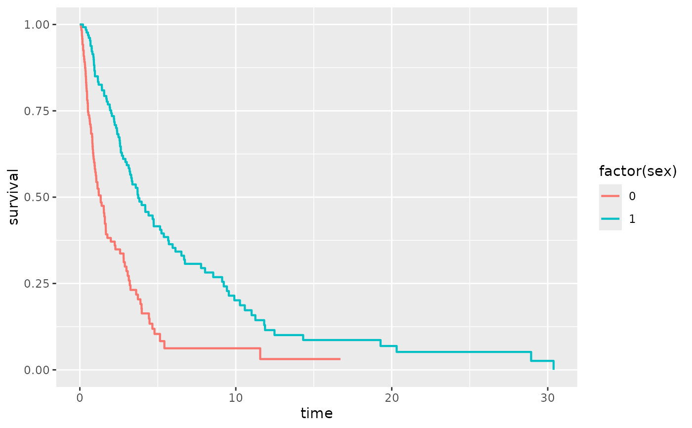
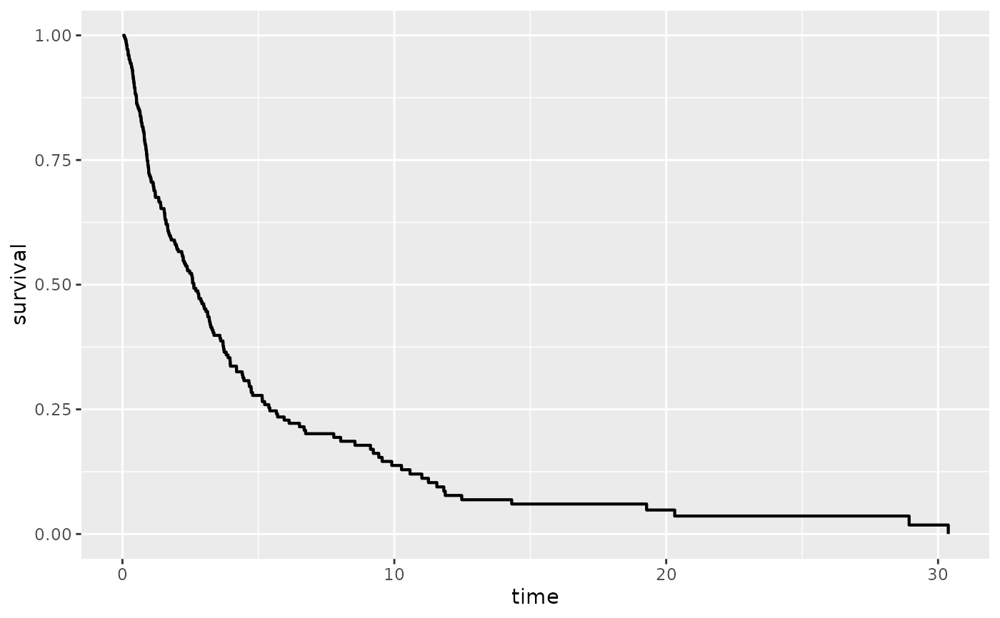
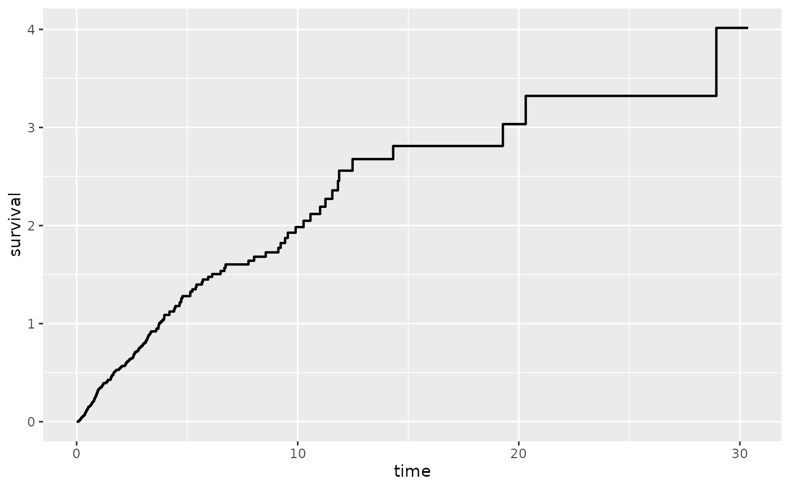
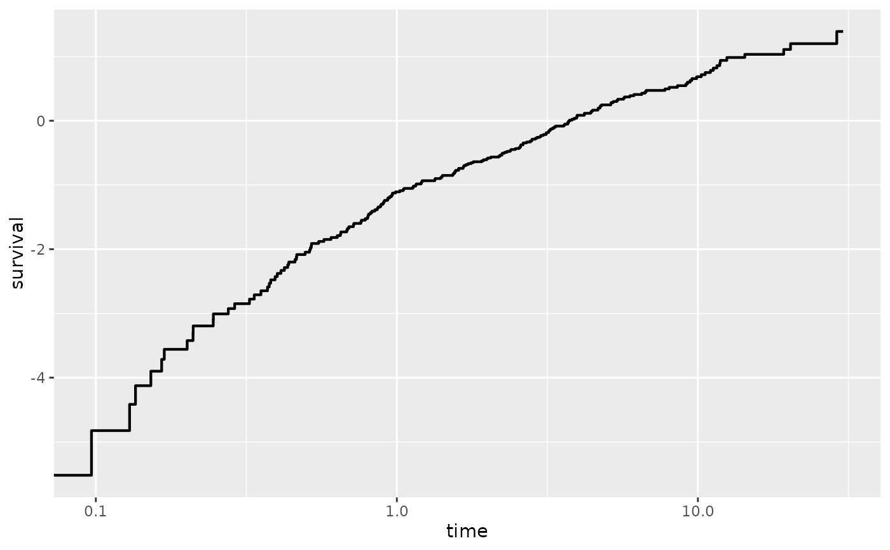
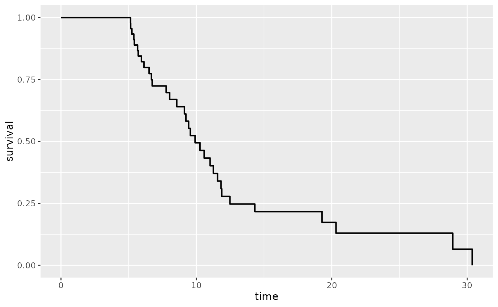

Adds a Kaplan Meier Estimate of Survival
Usage
stat_km(
mapping = NULL,
data = NULL,
geom = "km",
position = "identity",
show.legend = NA,
inherit.aes = TRUE,
trans = scales::identity_trans(),
firstx = 0,
firsty = 1,
type = "kaplan-meier",
start.time = 0,
...
)Arguments
- mapping
Set of aesthetic mappings created by
aes(). If specified andinherit.aes = TRUE(the default), it is combined with the default mapping at the top level of the plot. You must supplymappingif there is no plot mapping.- data
The data to be displayed in this layer. There are three options:
If
NULL, the default, the data is inherited from the plot data as specified in the call toggplot().A
data.frame, or other object, will override the plot data. All objects will be fortified to produce a data frame. Seefortify()for which variables will be created.A
functionwill be called with a single argument, the plot data. The return value must be adata.frame, and will be used as the layer data. Afunctioncan be created from aformula(e.g.~ head(.x, 10)).- geom
The geometric object to use to display the data for this layer. When using a
stat_*()function to construct a layer, thegeomargument can be used to override the default coupling between stats and geoms. Thegeomargument accepts the following:A
Geomggproto subclass, for exampleGeomPoint.A string naming the geom. To give the geom as a string, strip the function name of the
geom_prefix. For example, to usegeom_point(), give the geom as"point".For more information and other ways to specify the geom, see the layer geom documentation.
- position
A position adjustment to use on the data for this layer. This can be used in various ways, including to prevent overplotting and improving the display. The
positionargument accepts the following:The result of calling a position function, such as
position_jitter(). This method allows for passing extra arguments to the position.A string naming the position adjustment. To give the position as a string, strip the function name of the
position_prefix. For example, to useposition_jitter(), give the position as"jitter".For more information and other ways to specify the position, see the layer position documentation.
- show.legend
logical. Should this layer be included in the legends?
NA, the default, includes if any aesthetics are mapped.FALSEnever includes, andTRUEalways includes. It can also be a named logical vector to finely select the aesthetics to display.- inherit.aes
If
FALSE, overrides the default aesthetics, rather than combining with them. This is most useful for helper functions that define both data and aesthetics and shouldn't inherit behaviour from the default plot specification, e.g.borders().- trans
Transformation to apply to the survival probabilities. Defaults to "identity". Other options include "event", "cumhaz", "cloglog", or define your own using trans_new.
- firstx, firsty
the starting point for the survival curves. By default, the plot program obeys tradition by having the plot start at
(0,1).- type
an older argument that combined stype and ctype, now deprecated. Legal values were "kaplan-meier" which is equivalent to stype=1, ctype=1, "fleming-harrington" which is equivalent to stype=2, ctype=1, and "fh2" which is equivalent to stype=2, ctype=2.
- start.time
numeric value specifying a time to start calculating survival information. The resulting curve is the survival conditional on surviving to start.time.
- ...
Other arguments passed to survfit.formula
Details
This stat is for computing the confidence intervals for the Kaplan-Meier survival estimate for
right-censored data. It requires the aesthetic mapping x for the
observation times and status which indicates the event status,
0=alive, 1=dead or 1/2 (2=death). Logical status is not supported.
Aesthetics
stat_km understands the following aesthetics (required aesthetics
are in bold):
timeThe survival timesstatusThe censoring indicator, see Surv for more information.alphacolorlinetypesize
Examples
library(ggplot2)
sex <- rbinom(250, 1, .5)
df <- data.frame(time = exp(rnorm(250, mean = sex)), status = rbinom(250, 1, .75), sex = sex)
ggplot(df, aes(time = time, status = status, color = factor(sex))) +
stat_km()

## Examples illustrating the options passed to survfit.formula
p1 <- ggplot(df, aes(time = time, status = status))
p1 + stat_km()

p1 + stat_km(trans = "cumhaz")

# for cloglog plots also log transform the time axis
p1 + stat_km(trans = "cloglog") + scale_x_log10()
#> Warning: log-10 transformation introduced infinite values.

p1 + stat_km(type = "fleming-harrington")
p1 + stat_km(start.time = 5)
